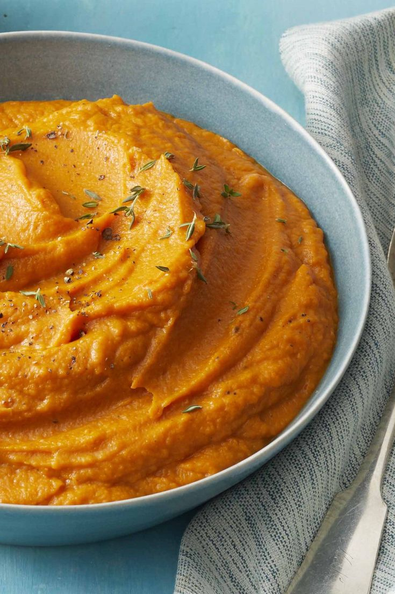

Recetas saladas:
Ensalada tipo guacamole

Ingredientes:
- Palta
- Tomatitos cherry
- Cebolla morada
- Cilantro
- Limón
- Aceite de oliva
- Sal fina
- Pimienta negra
- opcional: boconccinos
Preparación:
- Cortar todas los ingredientes en cubos bien chicos
- Mezclar todo en un bowl (no pasarse de mezclado asi la palta no se empieza aplastar toda)
- Condimentar con cantidades a gusto.
- ! es una ensalada super fresca y llenadora. A mi me encanta usarla de acompañamiento para una milanesa de carne :)
Pure de zanahoria

Ingredientes:
- Zanahoria
- Leche desceremada
- Manteca
- Sal
- Pimienta
- Nuez moscada
- opcional: jengibre rayado
Preparación:
- Cortar las zanahorias y cocinar idealemnte en vaporera para que no absorban tanta agua, pero en su defecto hervirlas.
- Una vez que esten bien tiernas colocarlas en un recipiente para mixear con la minipimer
- Agregar muy poquita leche y un poco de manteca, preferible ponerle menos e ir regulandolo que agregar de mas y que quede muy liquido el puré.
- Agregar los condimentos